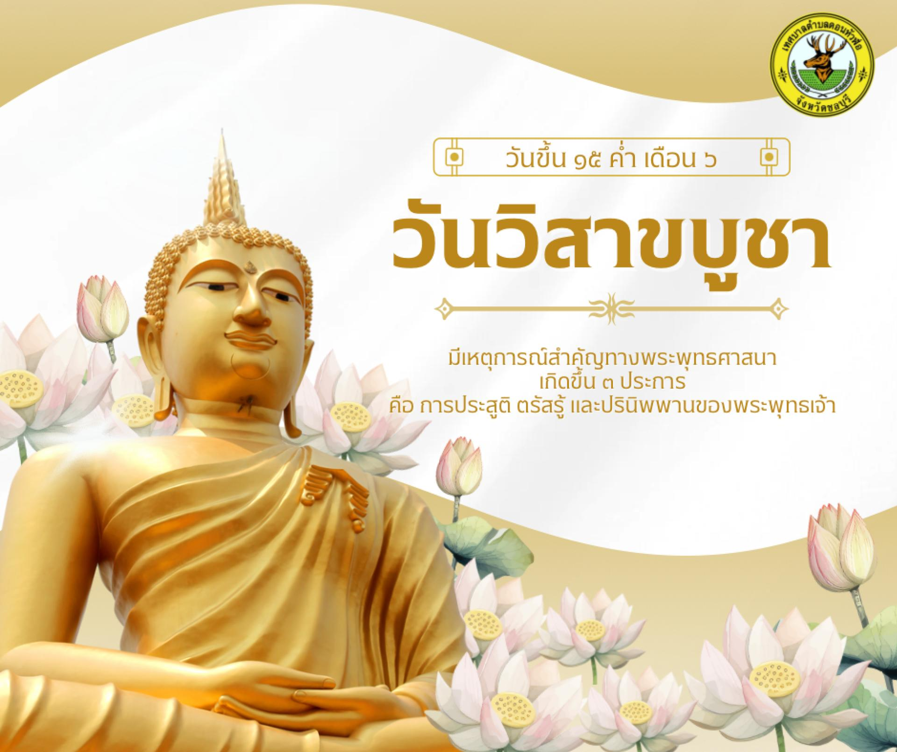

ประวัติและความสำคัญ
วันวิสาขบูชา ถือเป็นวันที่อัศจรรย์และสำคัญที่สุดในพระพุทธศาสนา เนื่องจากเป็นวันที่เกิดเหตุการณ์สำคัญ 3 ประการที่เกี่ยวข้องกับพระพุทธเจ้า...
3 เหตุการณ์สำคัญในวันวิสาขบูชา
- การประสูติ ...
- การตรัสรู้ ...
- การปรินิพพาน ...
วันสำคัญสากลของโลก (Vesak Day)
วันวิสาขบูชา ถือเป็นวันที่อัศจรรย์และสำคัญที่สุดในพระพุทธศาสนา เนื่องจากเป็นวันที่เกิดเหตุการณ์สำคัญ 3 ประการที่เกี่ยวข้องกับพระพุทธเจ้า...